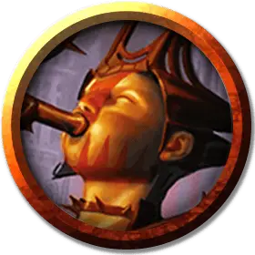

Ракдос-исполнитель, канатоходец
Rakdos Performer, High-Wire Acrobat
Средний Гуманоид (Любая раса), хаотично-злой

Класс Доспеха 13
Хиты 22 (4к8 + 4)
Скорость 40 футов, лазая 30 футов
| мод | спас | ||
|---|---|---|---|
| СИЛ | 13 | +1 | +1 |
| ЛОВ | 17 | +3 | +5 |
| ТЕЛ | 12 | +1 | +1 |
| мод | спас | ||
|---|---|---|---|
| ИНТ | 10 | +0 | +0 |
| МДР | 8 | −1 | −1 |
| ХАР | 15 | +2 | +4 |
Навыки Акробатика +7, Выступление +4
Чувства пассивное Восприятие 9
Языки один любой язык (обычно Общий)
Опасность 1 (200 опыта)
Бонус мастерства +2
Особенности
Шустрый. Исполнитель в свой ход может выполнять действие Отход бонусным действием.
Действия
Мультиатака. Пожиратель огня совершает две атаки Колючим шестом.
Колючий шест. . Рукопашная атака оружием: +5 к попаданию, досягаемость 5 фт., одна цель. Попадание: 7 (1к8 + 3) колющего урона, сразу после этого канатоходец может прыгнуть на расстояние до 20 футов. Этот прыжок не провоцирует атак.
Описание
Предлагая место для тех, кто обладает самыми разными талантами, Культ Ракдоса стал свидетелем увеличения числа выступающих артистов, включая жонглеров с клинками, пожирателей огня и акробатов на тросах. Исполнители несут послание Ракдоса на улицы: освободитесь, освободитесь от оков общественных нравов и ожиданий и потакайте своим желаниям.